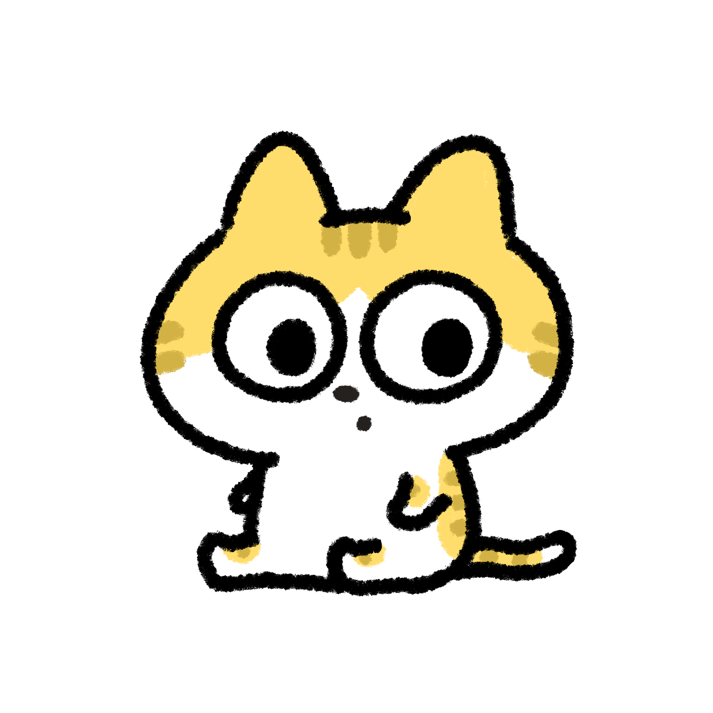

一日目
初めまして
猫の名前
サラ
景虎
あんず
ねこは
可愛い
綺麗
美しい
ねこの朝
ベッドから起きる
朝ごはん
寝る
ねこの夜
とりあえずゆっくり過ごす
ベッドに入る
猫との遊び
猫じゃらしを振ったり
、
ボールを投げる
とそれを追いかけて夢中で遊びます。
ねことあそぶとき使うとしたらどれですか？
ねこじゃらし
ボール
自走式のネズミのおもちゃ
使ったことがない、反応してくれないのは？
ねこじゃらし
ボール
自走式のネズミのおもちゃ
名前
家に来てからの年数
種類
あんず
一年
ラグドール
サラ
半年
ミックス
景虎
５か月
マンチカン
あなたの好きなねこの種類は？
ねこは何匹飼っていますか？
ねこの誕生月は？
--
1月
2月
3月
4月
5月
6月
7月
8月
9月
10月
11月
12月

教えてくれると嬉しいです！
ねこ
トップに戻る